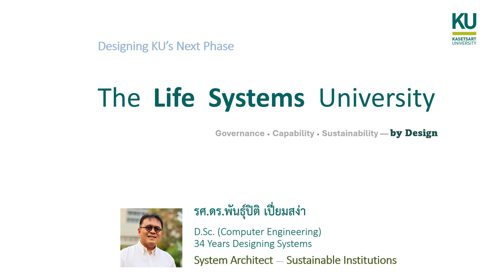

มหาวิทยาลัยที่ดีต้องรู้ว่าคนเก่งมาจากไหน และจะพาเขาไปไหนต่อ
{kind=link}

มหาวิทยาลัยที่ดีไม่ได้เริ่มต้นจากการรับคนเข้ามาแล้วค่อยคิดว่าจะพัฒนาเขาอย่างไร แต่ต้องเข้าใจเส้นทางของคนตั้งแต่ก่อนเข้ามหาวิทยาลัย ต้องรู้ว่าคนเก่งมาจากไหน อะไรทำให้เขาเติบโต และเมื่อเขาเข้ามาแล้ว มหาวิทยาลัยจะพาเขาไปสู่อนาคตแบบใด
เพราะฉะนั้น เมื่อถูกถามว่าทำไมผู้เขียนจึงเหมาะกับบทบาทอธิการบดีในช่วงนี้ คำตอบจึงไม่ใช่การไล่รายชื่อตำแหน่ง แต่คือการอธิบายว่างานที่ผ่านมาได้สร้างความเข้าใจอะไรจริงบ้าง โดยเฉพาะความเข้าใจที่ครอบพร้อมกันทั้งระบบ คน เครือข่าย และการสร้างสถาบัน
แกนแรกคือการมองทั้งระบบ มหาวิทยาลัยไม่ใช่ชุดของหน่วยงานที่แยกกันทำงาน แต่เป็นระบบที่มีโครงสร้าง อำนาจ ข้อจำกัด ทรัพยากร แรงจูงใจ และวัฒนธรรมเชื่อมกันอยู่ หากผู้นำเห็นเพียงปัญหาเฉพาะจุด ก็อาจแก้ได้เพียงปลายทาง แต่หากเข้าใจระบบ จะเริ่มเห็นว่าต้องออกแบบกลไกอย่างไรให้การเปลี่ยนแปลงเกิดขึ้นได้จริง
แกนที่สองคือการพัฒนาคน เพราะมหาวิทยาลัยไม่ใช่แค่องค์กรที่ต้องบริหารให้เดินต่อได้ แต่เป็นพื้นที่สร้างคนรุ่นใหม่ งานด้านหลักสูตร การดูแล talent การสร้างโอกาสการเรียนรู้ และการพัฒนาเยาวชนจึงไม่ใช่เรื่องประกอบ แต่เป็นหัวใจของภารกิจมหาวิทยาลัย
ผู้นำต้องเชื่อมโลกให้กลับมาเป็นผลลัพธ์ของคนในมหาวิทยาลัย
แกนที่สามคือการเชื่อมโลก ความเป็นสากลของมหาวิทยาลัยไม่ควรหยุดอยู่ที่พิธีการหรือความร่วมมือบนกระดาษ แต่ต้องแปลงเป็นโอกาสจริงของนิสิต อาจารย์ หลักสูตร งานวิจัย และเครือข่ายวิชาการ การเชื่อมต่างประเทศจึงมีความหมายเมื่อมันช่วยยกระดับคนและระบบภายในมหาวิทยาลัยได้จริง
แกนที่สี่คือการสร้างของที่อยู่ต่อได้ ผู้นำที่ดีไม่ควรสร้างเฉพาะโครงการที่อยู่ได้เพราะมีเจ้าของเรื่องคอยผลัก แต่ต้องสร้างระบบ หลักสูตร กลไก หรือสถาบันย่อยที่ทำงานต่อได้แม้คนเปลี่ยนตำแหน่ง นี่คือความแตกต่างระหว่างผลงานระยะสั้นกับการสร้าง institution
คำถามสำคัญไม่ใช่เคยมีตำแหน่งอะไร แต่เข้าใจอะไรและสร้างอะไรไว้
เมื่อรวมทั้งสี่มิติเข้าด้วยกัน ภาวะผู้นำที่ผู้เขียนเสนอจึงไม่ใช่ภาพของผู้บริหารที่มีประวัติยาว แต่เป็นภาพของคนที่ทำงานกับsystem, talent, global connection และinstitution building พร้อมกัน
นี่คือคำตอบต่อคำถามว่าผู้นำแบบไหนที่มหาวิทยาลัยต้องการในช่วงนี้ โดยเฉพาะในเวลาที่มหาวิทยาลัยต้องเปลี่ยนทั้งวิธีคิด วิธีทำงาน วิธีสร้างคน และวิธีเชื่อมตัวเองกับโลกภายนอกอย่างมีความหมาย